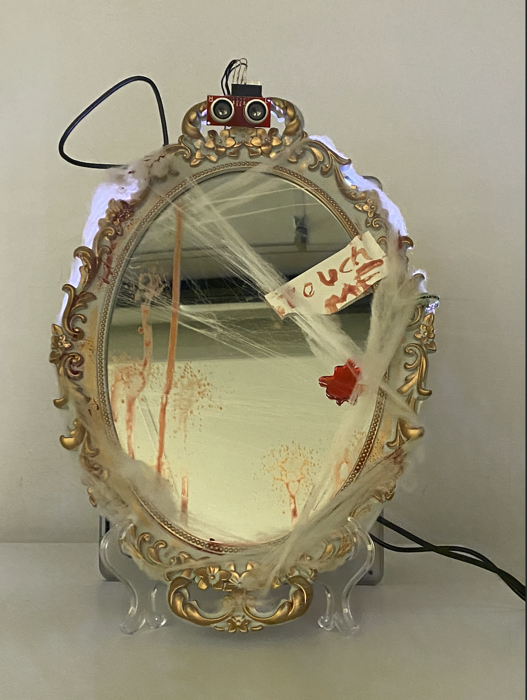

Physical Computing · Storytelling

This project is a case study in designing interactive products for children, using the folklore of Bloody Mary to create a playful and immersive experience. The interactive mirror responds to presence and touch, bringing the well-known childhood game to life.
Participants follow the classic ritual—standing in front of a mirror, turning off the lights, and saying "Bloody Mary" three times—only to trigger a surprise reaction. The mirror detects movement and interaction, adding an element of suspense and engagement.